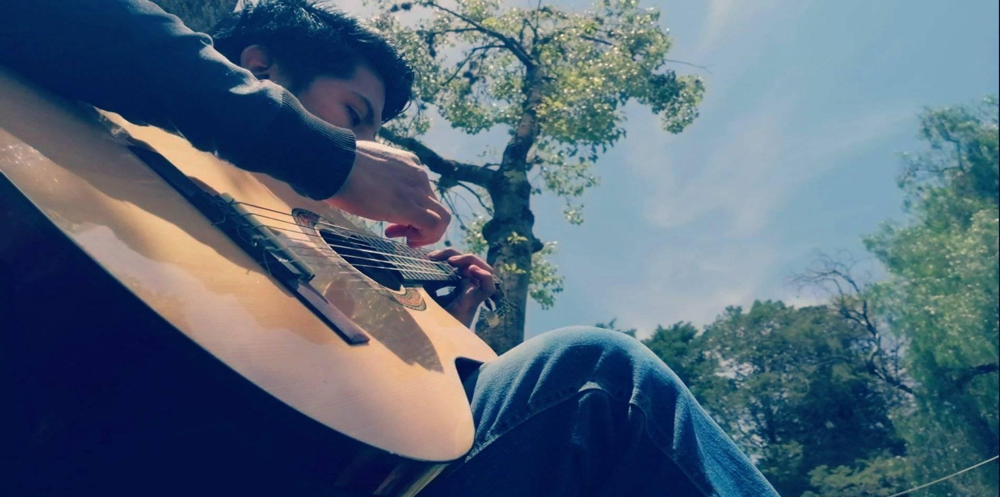
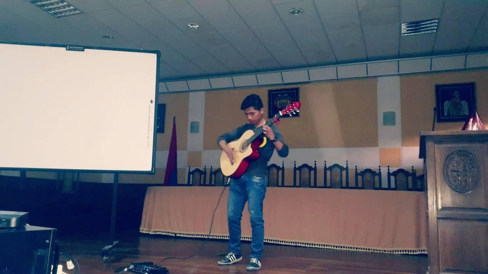
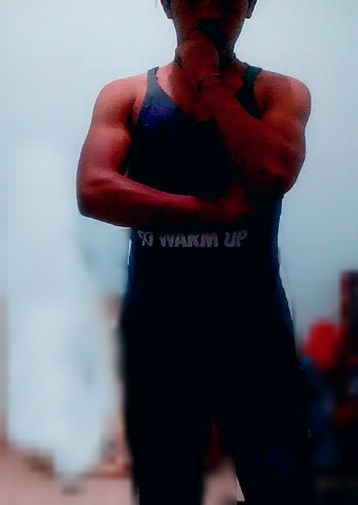

Entre mis pasatiempos se encuentra el futbol y el wally que son de mis deportes favoritos
Pero uno de mis grades pasatiempos es tocar la guitarra, llevo tocando aproximadamente unos 7 años

Lo que me a llevado a tener presentaciones en varios lugares
Eh llegado a tocar tambien en el concurso de talentos que suele realizar la Universidad

Y como otro de mis pasatiempos tambien es gimnasio
